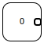
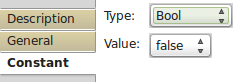

Constant

Constant is used whenever is needed by other tasks to be executed. You can set its value freely in one of basic data types.
Output Ports:
- Out optional = false, data type = Text|Decimal|Int32|Int64|Float32|Float64|Bool|Complex32|Complex64|<extensions contributed>
Output port where the constant data is available.
Properties:

- Type: Bool|Text|Decimal|Int32|Int64|Float32|Float64|Complex32|Complex64|<extensions dependent>
Data type of this constant. Extensions can contribute also. - Value: <depends on data type>
Depending on data type fill a value of constant.